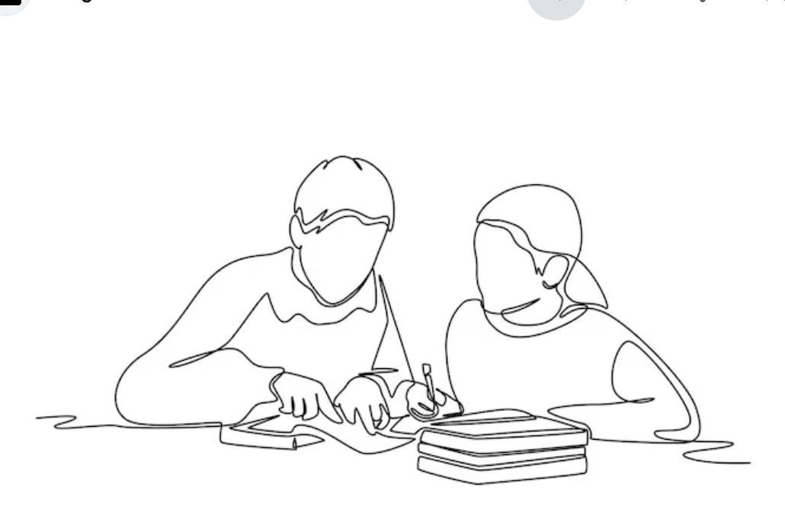

🐘 Purple Elephant
“Do not picture a purple elephant wearing sunglasses.” Most students picture it. We cannot force thoughts away; we can notice them without following them.
School · Class 8 · 15 minutes
A playful, non-competitive meditation session that uses curiosity, laughter and tiny experiments—not a lecture about “being calm.”
जिज्ञासा, हँसी और छोटे प्रयोगों के माध्यम से ध्यान को समझने वाला रोचक अभ्यास।
Choose a focus area to jump to that part of the session.

01 · Engaging Introduction
English
Ask: “Who controls your attention—you, or the many things happening around you?” Explain that this is a playful experiment in operating their own attention—not a demand to become silent or perfectly calm.
Invite everyone to participate with curiosity. There are no winners, scores or wrong experiences.
हिन्दी
पूछें: “आपका ध्यान कौन चलाता है—आप या आपके आसपास हो रही बहुत-सी चीज़ें?” बताएँ कि यह अपने ध्यान को चलाना सीखने का मज़ेदार प्रयोग है—चुप या पूरी तरह शांत होने का दबाव नहीं।
सबको जिज्ञासा के साथ भाग लेने दें। इसमें कोई विजेता, अंक या गलत अनुभव नहीं है।
02 · Six Experiments
English
Start with the 20-second attention test: “Your only job is to notice your breathing. Whenever your brain thinks about lunch, homework, your phone or someone here, notice it and return.”
Ask, “Who got distracted?” When hands rise, respond: “Perfect. You just discovered why meditation exists.” Continue with the six playful experiments below.
हिन्दी
20 सेकंड के ध्यान परीक्षण से शुरू करें: “केवल अपनी साँस पर ध्यान दें। जब मन लंच, होमवर्क, फोन या किसी दोस्त की ओर जाए, उसे पहचानें और वापस आएँ।”
पूछें: “किसका ध्यान भटका?” हाथ उठने पर कहें: “बहुत बढ़िया—आपने अभी जान लिया कि ध्यान की आवश्यकता क्यों है।” फिर नीचे दिए छह मज़ेदार प्रयोग करें।
Experiments · Activity Toolkit
“Do not picture a purple elephant wearing sunglasses.” Most students picture it. We cannot force thoughts away; we can notice them without following them.
“Before I mentioned it, were you aware of where your tongue was resting?” Attention reveals sensations the brain had been ignoring.
Imagine slicing and biting a juicy lemon. Did anyone’s mouth water? A thought can create a genuine bodily response.
Look at a partner for ten seconds and try not to smile. Fighting an experience can make it stronger; meditation practises observing.
“Can you see your nose right now?” It was visible all along, but the brain filtered it out. Attention determines what we notice.
Play “Happy Birthday” silently and stop halfway. Did it try to continue? The mind produces patterns we can observe without obeying.
03 · Set Up
English
Sit comfortably with both feet on the floor. Let the hands and shoulders relax. Students may close their eyes or look softly downward.
There is no winner, no need to make the mind blank, and no need to change the natural breath.
हिन्दी
दोनों पैर ज़मीन पर रखकर आराम से बैठें। हाथों और कंधों को ढीला छोड़ें। विद्यार्थी चाहें तो आँखें बंद करें या दृष्टि को धीरे नीचे रखें।
इसमें कोई विजेता नहीं है, मन को खाली करना आवश्यक नहीं है और स्वाभाविक साँस को बदलना नहीं है।
04 · Foundation
English
Meditation is not having zero thoughts. It is noticing what the mind is doing and deliberately returning attention to one chosen anchor, such as the natural breath.
A wandering mind is not failure. Noticing the wandering is the moment the attention exercise begins.
हिन्दी
ध्यान का अर्थ विचारों को पूरी तरह समाप्त करना नहीं है। इसका अर्थ है मन क्या कर रहा है, इसे पहचानना और ध्यान को स्वाभाविक साँस जैसे चुने हुए आधार पर वापस लाना।
मन का भटकना असफलता नहीं है। भटकाव को पहचानना ही ध्यान के अभ्यास की शुरुआत है।
05 · Practical framing
English
Students already shift attention among sights, sounds, thoughts and body sensations. Breath observation gives them a neutral target for practising the return of attention.
Do not promise that meditation will produce perfect grades or remove every difficult emotion. Present it as a practical skill that may support focus, self-awareness and a pause before reacting.
हिन्दी
विद्यार्थी पहले से ही दृश्य, ध्वनि, विचार और शरीर की संवेदनाओं के बीच ध्यान बदलते रहते हैं। साँस का अवलोकन उन्हें ध्यान वापस लाने का सरल और तटस्थ आधार देता है।
पूर्ण अंक या हर कठिन भावना समाप्त होने का वादा न करें। इसे एक ऐसे व्यावहारिक कौशल के रूप में रखें, जो एकाग्रता, आत्म-जागरूकता और प्रतिक्रिया से पहले ठहराव में सहायक हो सकता है।
Session Overview · Six Focus Areas
| Section | Time | Focus | Facilitator plan |
|---|---|---|---|
| 01 | 0:00–2:00 | Engaging Introduction | Ask: “Who controls your attention—you, or the many things happening around you?” Run the 20-second attention experiment and make wandering feel normal. |
| 02 | 2:00–6:00 | Six Experiments | Use the Purple Elephant, Invisible Tongue, Imaginary Lemon, Don’t Smile, Missing Nose and Internal Radio demonstrations. Keep the pace light and invite quick reactions. |
| 03 | 6:00–7:00 | Set Up | Feet on the floor, hands relaxed and spine comfortable. Eyes may close or look softly downward. There is no winner and no need to make the mind blank. |
| 04 | 7:00–11:00 | Simple Activity | Notice where the breath is easiest to feel. Count each exhalation from one to five, then begin again. When attention wanders, gently restart at one. Finish by hearing three sounds. |
| 05 | 11:00–14:00 | Share | Use fingers: 1 = difficult to return, 3 = mixed, 5 = easy. Ask two students what helped; never compare scores. |
| 06 | 14:00–15:00 | Close | Challenge students to try five natural breaths before homework, an exam, a game or a difficult conversation. |
07 · Guided sample
English
Sit comfortably and let your hands rest. Notice one natural breath entering and leaving.
Do not deepen or control it. Silently count each exhalation: one, two, three, four, five—then begin again.
If attention wanders, silently say “return” and come back to the next breath. Finish by noticing three sounds and opening your eyes.
हिन्दी
आराम से बैठें और हाथों को सहज रखें। एक स्वाभाविक साँस को अंदर आते और बाहर जाते महसूस करें।
साँस को गहरा या नियंत्रित न करें। हर बाहर जाती साँस को गिनें—एक, दो, तीन, चार, पाँच—फिर दोबारा शुरू करें।
ध्यान भटके तो मन में “वापस” कहें और अगली साँस पर लौटें। अंत में तीन ध्वनियाँ सुनें और आँखें खोलें।
08 · Reflection
English
Ask: “What distracted you? What helped you return?” Emphasize that students are reporting an experiment, not competing.
Close with: “A wandering mind does not mean you failed. Noticing that it wandered means the exercise is working.”
हिन्दी
पूछें: “ध्यान किस कारण भटका? वापस आने में किस बात ने सहायता की?” स्पष्ट करें कि यह अनुभव साझा करना है, प्रतियोगिता नहीं।
अंत में कहें: “मन का भटकना असफलता नहीं है। भटकाव को पहचानना बताता है कि अभ्यास काम कर रहा है।”
The goal is not to become calm every time. The goal is to notice what the mind is doing right now.Notice → Return → Repeat